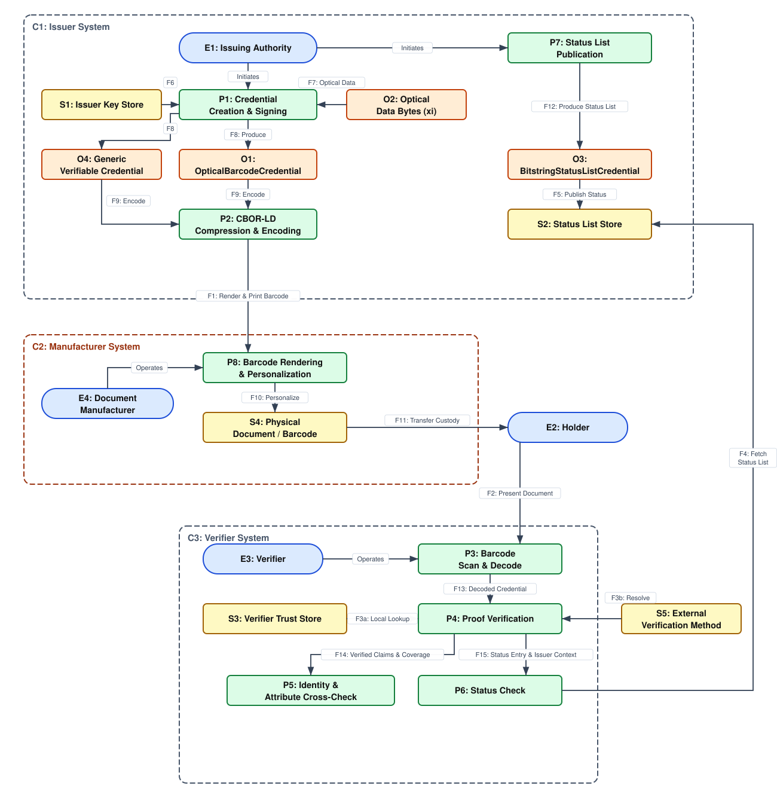

This document describes a threat model for the Verifiable Credential Barcodes specification. It identifies and analyzes security and privacy threats specific to ecosystems that embed verifiable credentials in optical barcodes in order to provide authenticity, integrity, and real-time status management for physical documents.
This threat model is a work in progress. It is published alongside the Verifiable Credential Barcodes specification to inform implementers and ecosystem designers of the security and privacy considerations relevant to deployments of the specification. Feedback and proposed additions are welcome via the issue tracker.
This document provides a threat model for the Verifiable Credential Barcodes specification, which supports two use cases:
OpticalBarcodeCredential. Verifiable Credentials of
type OpticalBarcodeCredential can use the ecdsa-xi-2023
Data Integrity cryptosuite to protect via digital signature not only
the claims in the credential itself, but also other machine-readable data already printed
on a physical document - such as the PDF417 on a driver's license or a machine-readable zone.
In both cases, a credential that successfully verifies is guaranteed to have
originated from the claimed issuing authority (authenticity) and to carry data
unmodified since issuance (integrity), and the document's revocation or
suspension status can be checked in real time - all without a privacy-invasive
"phone home" to a source-of-truth database. The two use cases differ in what
the digital signature covers: a generic credential's signature covers only the
credential's own claims, while an OpticalBarcodeCredential's
signature also covers selected optical data on the document.
This threat model follows the methodology described in the W3C Threat Modeling Guide and uses the STRIDE taxonomy for classifying threats. Threats are grouped into four categories:
The Verifiable Credential Barcodes ecosystem enables an [=E1|issuing authority=]
— such as a state motor vehicle agency, a passport authority, or another
document-issuing body - to either encode generic Verifiable Credentials
as barcodes ([=O4|O4=]) or issue a specific type of Verifiable Credentials,
OpticalBarcodeCredentials ([=O1|O1=]),
that secure non-Verifiable Credential optical data on a physical document.
In the first case, the [=E1|issuer=] signs the credential with an ordinary
Data Integrity proof over the claims it contains. In the second, the
[=E1|issuer=] signs with the ecdsa-xi-2023 cryptosuite, which
covers selected fields of the barcode - the [=O2|optical data bytes=] -
as "extra information". In both cases, the credential is
compressed with CBOR-LD, character-encoded, and printed into a barcode (a
PDF417, a QR code, or a machine-readable zone) on a document carried by the
[=E2|holder=].
A [=E3|verifier=] who scans a physical document must
be able to cryptographically verify
whether the credential was issued by a trusted [=E1|authority=], whether its
signed content has been tampered with, and (optionally) whether the document remains valid —
and, for an [=O1|OpticalBarcodeCredential=], whether the document's other signed optical
data matches what was signed. The specification addresses this by signing over
the credential (and, for [=O1|OpticalBarcodeCredentials=], the optical data),
by carrying a TerseBitstringStatusListEntry for status checks, and
by advising verifiers to compare the signed data against the data visible on
the document and against the physical attributes of the person presenting it —
while trusting only what each credential's proof actually covers.
For this threat model, we consider a minimal instantiation of the Verifiable Credential Barcodes ecosystem consisting of four external roles: the [=E1|Issuing Authority=] (E1) who creates and signs [=O1|OpticalBarcodeCredentials=] and/or [=O4|generic verifiable credentials=] and publishes status information, the [=E2|Holder=] (E2) who carries and presents the physical document, the [=E3|Verifier=] (E3) who scans, verifies, and cross-checks the document, and the [=E4|Document Manufacturer=] (E4) who renders the encoded credential onto a physical card. In this instantiation we assume that the holder and presenter of a physical document containing a Verifiable Credential Barcode are the same individual.
Both use cases appear in the data flow diagram below. The specification's general
algorithms can encode any
[=O4|Generic Verifiable Credential Expressed as Barcode=] into a barcode; that flow bypasses the
[=O2|optical data=] binding entirely - the credential's proof covers only its
own claims. All threats that do not
depend on the ecdsa-xi-2023 binding (issuer spoofing, revocation,
duplication, status, privacy, key management, and encoding threats, among
others) apply to both flows.
The data flow diagram below illustrates the key elements and data flows in a minimal Verifiable Credential Barcodes ecosystem, organized into three system boundaries: the [=C1|issuer system=] (C1), the [=C2|manufacturer system=] (C2), and the [=C3|verifier system=] (C3). An [=E1|issuing authority=] (E1) creates and signs either a [=O4|generic verifiable credential=] (O4) or an [=O1|OpticalBarcodeCredential=] (O1) - in the latter case taking the [=O2|optical data bytes=] (O2) as an input to signing - then compresses and encodes the credential (P2) and delivers it via [=F1|F1=] to the [=E4|document manufacturer=] (E4). Within the [=C2|manufacturer system=], the manufacturer renders and personalizes the [=S4|physical document=] (S4) at [=P8|P8=]; custody of that document then transfers across the boundary to the [=E2|holder=] (E2). The holder [=F2|presents the document=] to a [=E3|verifier=] (E3), who scans and decodes it (P3) and verifies the proof (P4), obtaining key material either from the [=S3|verifier trust store=] ([=F3|F3a=]) or through [=DID|external verification-method resolution=] ([=F3|F3b=]). Proof verification passes its verified claims and protected-field coverage to the [=P5|identity and attribute cross-check=] (P5) and the validated status entry and issuer context to the [=P6|status check=] (P6), which may optionally [=F4|fetch the status list=] (O3) to confirm the document has not been revoked or suspended.

The following notation is used in the diagram description and dictionary. Every
element is labelled with a type letter and an index (for example, P4
or F3a), and every data flow carries an identifier so it can be
referenced from threats and responses.
The diagram records the following assumptions, which constrain its scope and are called out here rather than left implicit:
| E1 Issuing Authority |
An entity - such as a state motor vehicle agency, a passport authority, or
another document-issuing body - that creates and cryptographically signs
credentials for optical barcodes - both
[=O4|generic verifiable credentials=] and
OpticalBarcodeCredential resources - and operates the status
infrastructure for the documents it issues. The issuing authority controls
the signing keys and the verification method against which its credentials
are validated, and is the authority for any credential it issues.
|
| E2 Holder | The person who carries a physical document bearing a Verifiable Credential Barcode - for example the person named on a driver's license, employment authorization document, or travel document - and who presents that document to a verifier. The holder does not operate a system in this model; they carry the [=S4|physical document=]. |
| E3 Verifier |
An entity - such as a law enforcement officer, a border control or customs
agent, an age-verification clerk, or an automated inspection kiosk - that
scans the optical barcode, verifies the credential it carries - a
[=O4|generic verifiable credential=] or an
OpticalBarcodeCredential - cross-checks the signed data against
the visible document and the person when relevant, and optionally checks status
information. The verifier is configured to determine from each credential's type
and proof what its signature actually covers.
|
| E4 Document Manufacturer |
An organization or entity that renders an encoded credential —
a [=O4|generic verifiable credential=] or an
OpticalBarcodeCredential - into an optical barcode on a physical
card or document.
|
| P1 Credential Creation and Signing |
The process by which an issuing authority assembles and signs a credential for
an optical barcode. For a [=O4|generic verifiable credential=], the issuer
signs an ordinary Data Integrity proof over the claims the credential contains.
For an OpticalBarcodeCredential, the issuer computes the
[=O2|optical data bytes=] over the fields selected by the credential type's
component extraction rules (for example using protectedComponentIndex
against PDF417 key-value pairs) and signs with
the ecdsa-xi-2023 cryptosuite so the proof covers both the
credential and the optical data.
|
| P2 CBOR-LD Compression and Encoding |
The process by which a signed credential - a
[=O4|generic verifiable credential=] or an OpticalBarcodeCredential - is
compressed using CBOR-LD and then character-encoded so that it can be rendered into an
optical barcode.
|
| P3 Barcode Scan and Decode |
The process by which a verifier optically scans the barcode, reverses the
character encoding, and decompresses the CBOR-LD payload to recover the
credential and, when it is an OpticalBarcodeCredential, to
reconstruct the [=O2|optical data bytes=] from the document for verification.
|
| P4 Proof Verification |
The process by which a verifier checks the credential's proof. For a
[=O4|generic verifiable credential=], it verifies a standard Data Integrity
proof over the credential's claims. For an
OpticalBarcodeCredential, it additionally recomputes the hash of
the reconstructed [=O2|optical data bytes=] as required by
ecdsa-xi-2023. In both cases it resolves the issuer's
verificationMethod and confirms the signature is valid and that
the resolving issuer is trusted. The process produces an error if any check
fails.
|
| P5 Identity and Attribute Cross-Check | The process by which a verifier confirms that the signed data matches the data visible on the document, that the signed data matches the physical attributes of the person presenting it, and that the visible data matches that person. Only fields protected by the signature are relied upon for fraud detection — for a [=O4|generic verifiable credential=], that is solely the credential's own claims, since its signature covers no other data on the document. |
| P6 Status Check |
The process by which a verifier expands the
TerseBitstringStatusListEntry into a
BitstringStatusListEntry and checks the corresponding entry in the
issuer's status list to determine whether the document has been revoked or
suspended. This process is performed after proof verification succeeds.
|
| P7 Status List Publication |
The process by which an issuing authority creates and updates the
BitstringStatusListCredential that records the status of the documents
it has issued, and makes it available for retrieval.
|
| P8 Barcode Rendering and Personalization | The process, operated by the [=E4|document manufacturer=] within the [=C2|manufacturer system=], that receives the encoded credential via [=F1|Render and Print Barcode=], renders it as an optical barcode, and creates the [=S4|physical document=] that carries it. |
| F1 Render and Print Barcode | The data flow by which an encoded credential is delivered to the [=E4|document manufacturer=] and rendered as an optical barcode on a physical document. |
| F2 Present Document | The data flow by which a holder presents a physical document with an optical barcode to a verifier for scanning. This flow crosses the security boundary between the holder's possession and the [=C3|verifier's system=]. |
| F3 Resolve Verification Method |
The data flow by which a verifier obtains the issuer's public key material in
order to verify the credential. The model distinguishes two sub-flows:
F3a, a lookup in the verifier's [=S3|local trust store=] of
already-trusted key material and policy; and F3b, external
verification-method resolution, such as resolving a did:web
identifier via [=DID|external verification-method resolution=]. This threat model
treats threats in resolving an external verification method as largely out of scope,
as they are not specific to barcodes or other optical media in any way.
|
| F4 Fetch Status List |
The data flow by which a verifier retrieves, typically with a standard HTTP GET
request, the BitstringStatusListCredential Verifiable Credential
from the host identified by terseStatusListBaseUrl, receiving the
status list in response, in order to perform a status check. This flow is
optional: it occurs only when a verifier performs an online
[=P6|status check=], and is omitted when status is not checked or a cached
result is reused.
|
| F5 Publish Status | The data flow by which an issuing authority writes revocation and suspension updates into the status list store from which verifiers retrieve them. |
| S1 Issuer Key Store | The persistent storage within the [=C1|issuer system=] that holds the issuing authority's private signing keys. Compromise of this store undermines the authenticity guarantees of every credential signed with the affected key. |
| S2 Status List Store |
The persistent storage, typically a publicly retrievable web endpoint, where
the issuing authority publishes BitstringStatusListCredential
resources. Verifiers retrieve status lists from this store via
[=F4|Fetch Status List=].
|
| S3 Verifier Trust Store | The storage within the [=C3|verifier system=] that holds the set of issuing authorities and verification methods the verifier considers authoritative. It is consulted during [=P4|proof verification=] to decide whether a resolving issuer is trusted. |
| S4 Physical Document / Barcode | The physical document that carries the printed optical barcode. As a data store, it persistently holds one or more encoded Verifiable Credentials and is the medium presented by the holder and scanned by the verifier. It is outside any compute boundary and is readable by anything with optical access to it. This store moves from the custody of the [=E4|Document Manufacturer=], inside the [=C2|manufacturer system boundary=], to the custody of the [=E2|holder=]. |
| O1 OpticalBarcodeCredential |
A compact, cryptographically-signed verifiable credential that secures the contents
of an optical barcode. It carries the issuer, a proof produced by the
ecdsa-xi-2023 cryptosuite, a credentialSubject whose
type is a subclass of the general MachineReadableInformation superclass
and optionally a TerseBitstringStatusListEntry. Each subclass defines the optical
data it secures, its component extraction rules, and its character encoding.
|
| O2 Optical Data Bytes (xi) |
The canonicalized "extra information" that is hashed
and bound into the ecdsa-xi-2023 signature. It extends the credential's
digital signature to cover other machine readable data on the document rather than
covering the credential alone.
|
| O3 BitstringStatusListCredential |
A verifiable credential, published by the issuing authority, that encodes status information
of a large set of Verifiable Credentials as a compressed
bitstring. Verifiers consult it during [=P6|status check=] after expanding the
credential's TerseBitstringStatusListEntry.
|
| O4 Generic Verifiable Credential Expressed as Barcode |
Generic verifiable credentials can be encoded into a barcode using this specification's
general encoding algorithms (CBOR-LD compressed, base45-multibase-encoded, prefixed with
VC1-). Here, the credential's Data Integrity proof covers only the claims
explicitly included in the credential itself and the digital signature covers no other
machine-readable data on the physical document.
|
| C1 Issuer System | The system boundary - typically the servers and key-management infrastructure operated by the issuing authority - that runs the [=P1|Credential Creation and Signing=], [=P2|CBOR-LD Compression and Encoding=] (in part), and [=P7|Status List Publication=] processes and maintains the [=S1|Issuer Key Store=] and [=S2|Status List Store=]. |
| C2 Manufacturer System |
The supply-chain system boundary controlled by the [=E4|document manufacturer=].
Its controlling authority is the manufacturer; its input is the encoded
credential delivered by [=F1|Render and Print Barcode=]; its process is
[=P8|Barcode Rendering and Personalization=]; and it holds the
[=S4|physical document=] while that document is in production, before custody
transfers to the [=E2|holder=]. The manufacturer is frequently a distinct
organization from the issuer, so the boundary between [=C1|C1=] and
C2 is a genuine supply-chain trust boundary.
|
| C3 Verifier System | The system boundary that runs the [=P3|Barcode Scan and Decode=], [=P4|Proof Verification=], [=P5|Identity and Attribute Cross-Check=], and [=P6|Status Check=] processes and holds the [=S3|Verifier Trust Store=]. |
| DID External Verification-Method Resolution |
A dependency outside every modelled system boundary: the external
infrastructure — for example DNS, a web server, and the resolution machinery of
a DID method such as did:web — from which a verifier obtains issuer
key material via [=F3|F3b=] when the verification method is not already present
in the [=S3|verifier trust store=]. Because no modelled party controls it, its
compromise is treated as an inherited dependency risk.
|
An issuing authority creates and signs credentials for optical barcodes - both
[=O4|generic verifiable credentials=] and OpticalBarcodeCredential
resources - and operates the status infrastructure for the documents it
issues.
Issuing authorities typically have an interest in ensuring that only unmodified documents they genuinely issued can pass verification, that their signing keys are not compromised, and that they can revoke or suspend documents after issuance. They bear operational responsibility for the availability and integrity of the status lists they publish and for the consequences of signing documents that remain in circulation for years.
A holder is a person carrying a physical document that bears a Verifiable Credential Barcode - examples include an importer presenting credentials at a border, a driver presenting a license, or an employee presenting an employment authorization document.
A holder's primary goal is for their genuine documents to be accepted while their personal information is not over-exposed. Because a barcode can be read at a distance and discloses all of its signed contents at once, holders' privacy considerations here differ slightly from Verifiable Credential ecosystems where credentials are stored and presented digitally.
A verifier receives a physical document from a holder and must determine whether to accept it. Verifiers range from automated border-control kiosks processing travelers at high volume to human officers and clerks checking a license or permit by hand.
The verifier's primary goal is to confirm that the document was issued by a
genuinely trusted authority, that its signed data has not been tampered with,
(optionally) that its status entries do not render it invalid, and that it
belongs to the person presenting it. Because the two credential kinds differ
in what their proofs cover, the verifier must also determine whether a given barcode carries an
OpticalBarcodeCredential that binds the document's optical data or
a [=O4|generic verifiable credential=] whose signature covers only its own
claims, and scope trust accordingly. Verifiers also have a strong interest in availability - a denial
of service against the status lists they depend on directly impairs their
ability to function - and in the trustworthiness of the verification software
they run.
A document manufacturer is the organization that renders the encoded credential into a barcode on a physical document. In many cases this is a distinct organization from the issuing authority.
The manufacturer handles the encoded credential and the physical medium, and it may inject data, such as serial numbers, that the issuer did not sign. Faithful rendering and correct application of the specification's encoding conventions are essential to the document verifying as intended.
This threat model is maintained alongside the Verifiable Credential Barcodes specification. Feedback, bug reports, and proposed additions are welcome via the issue tracker.